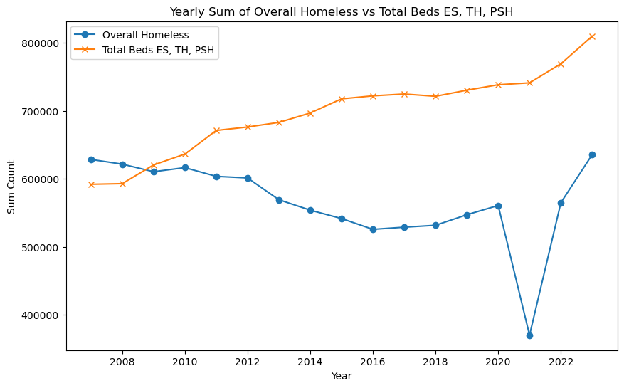

Overview
Brief summary of business need and solution.
More information about the analysis and its purpose.
Brief summary of business need and solution.
More information about the analysis and its purpose.
More information about the analysis and its purpose.
Model analysis and results that can aid program administrators.


Viable solutions that can aid program administrators.

Our dataset was large with many factors. If given further time, we would incorporate another dataset like Census Bureau financials.
We would also further research grants and grants awarded in past years.
Finally, we would like to incorporate a survey of unhoused individuals to better understand their needs.
Take a deeper dive into the type of data we can find - explore census data, any other larger or even more uncommonly found datasets that can allow us to explore further into demographics and situational circumstances that may lead to homelessness. Use this data and prediction model to see if it can be used to predict if a person could face homelessness before it becomes a problem, and reach out to assist.